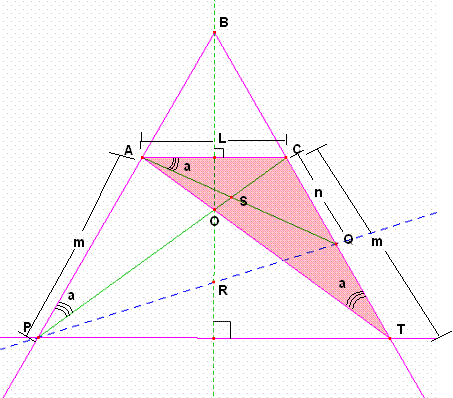
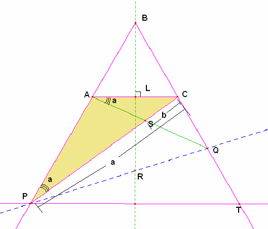
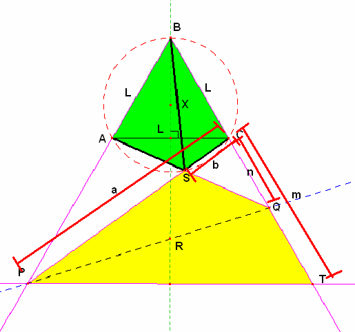

Propuesto por Juan Carlos Salazar, profesor de Geometría del Equipo Olímpico de Venezuela.(Puerto Ordaz)
Para el aula
Problema 306
Sea el triángulo equilátero ABC, por el punto R simétrico de B con respecto a AC se traza una
recta que corta a las prolongaciones de BA y BC en P y Q respectivamente. Además si S es el punto de corte
de AQ y PC, y T es el punto de corte de AC y PQ. Demostrar que: SB = SA + SC y <BST = 90º.
Nota: José María Pedret advierte que la relación es distinta según se tome la recta. Es SB=SC-SA ó SB=SA-SC, según la recta por R corte antes o después a BC o AB.
El director agradece la atención prestada. (2 de abril de 2006)
Salazar, J. C. (2006): Comunicación personal.
Solución de William Rodríguez Chamache, profesor de geometria de la "Academia integral class" Trujillo- Perú
parte a
Sea: AP=m y CQ=n y L= lado del triángulo equilátero ABC observamos que: PB//CR y AR//BQ luego los triángulos PAR y RCQ son semejantes entonces se cumple:

En el trapecio PACT los puntos A, O y T son colineales en el triángulo ACT observamos que por lo tanto a

También observamos que en el triángulo PAC se cumple

Ahora observamos que ab=mn entonces el cuadrilátero PSQT es inscriptible entonces
Con estos ángulo de mostramos que el cuadrilátero ABCS también es inscriptible luego en el cuadrilátero ABCS se cumple el teorema de tholomeo BS(L)=SC(L)+AS(L) simplificando obtenemos: BS=SC+AS.
William Rodríguez chamache.